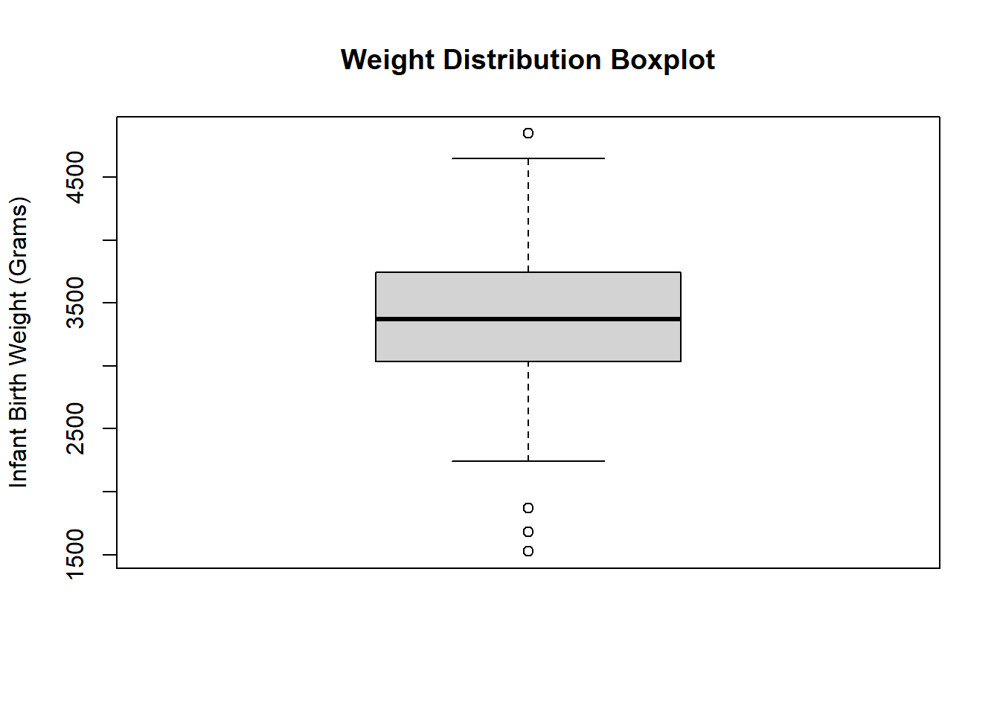
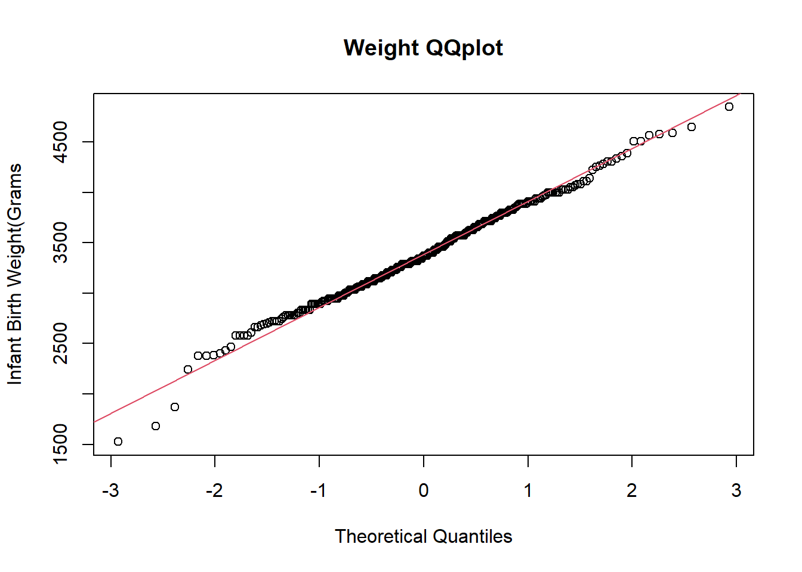

Generate Boxplot for infant birth weight (Weight) and comment on the general features of the distribution. Generate a normal QQ-plot and perform the Shapiro-wilk test to check whether normality is a reasonable assumption for Weight. Make a conclusion.
qqnorm(df_births$weight, )
# The data looks pretty close to normally distributedboxplot(df_births$Weight,main ="Weight Distribution Boxplot",ylab ="Infant Birth Weight (Grams)" )

# This is pretty spot onqqnorm( df_births$Weight,main ='Weight QQplot',ylab='Infant Birth Weight(Grams'); qqline(df_births$Weight,col =2)

# This is another sign for normal distribution. Can't reject H0: normal distributionshapiro.test(df_births$Weight)
Shapiro-Wilk normality test
data: df_births$Weight
W = 0.99206, p-value = 0.1153
# We will continue assuming normality with evidence in the bag!
(b) Boxplot by MomSmoke
Generate a boxplot of Weight by MomSmoke and compare infant birth weights between smoking levels.
# It looks like the variance of not smokers is higher than the non smokers. # Also on average the smoker's babies weigh less.boxplot(Weight ~ MomSmoke,df_births)
(c) Shapiro for Non/Smokers
For each level in MomSmoke, perform the Shapiro-wilk test to check the Normality of Weight. Make a conclusion.
df_smoker <-filter(df_births, MomSmoke ==1)# High p-val means cannot rej H0: NORMAL DISTRIBUTIONshapiro.test(df_smoker$Weight)
Shapiro-Wilk normality test
data: df_smoker$Weight
W = 0.96299, p-value = 0.2
df_nonsmoker <-filter(df_births, MomSmoke ==0)# High p-val means cannot rej H0: NORMAL DISTRIBUTIONshapiro.test(df_nonsmoker$Weight)
Shapiro-Wilk normality test
data: df_nonsmoker$Weight
W = 0.99362, p-value = 0.3549
Exercise 2 (t-test)
We want to test if there is a significant difference in birth weights between infants from smoking moms and nonsmoking moms.
Perform a hypothesis test of whether infants from smoking moms have different weights than infants from nonsmoking moms. Which test do you choose? Use the answer in Exercise 1 to choose the proper test. Specify null and alternative hypotheses and state your conclusion
NOTE: If you decide to use the parametric test, perform a two-sample t-test rather than ANOVA
(a) Hypothesis testing
H0: \(\mu_s = \mu_n\)
Halt: \(\mu_s \neq \mu_n\)
# We proved every step of the way above that our data is normally distributed. # Therefor we will use the two-sample-t-test to check for a significant mean weight # difference in babies from smoker/nonsmoker parents.# H0: mu_smoke == mu_nonsmoker# Halt: mu_smoke != mu_nonsmoker# We can reject H0 and accept Halt: mu_smoke != mu_nonsmokert.test(df_births$MomSmoke, df_births$Weight, alternative ='two.sided',var.equal = T)
Two Sample t-test
data: df_births$MomSmoke and df_births$Weight
t = -114, df = 588, p-value < 2.2e-16
alternative hypothesis: true difference in means is not equal to 0
95 percent confidence interval:
-3444.792 -3328.103
sample estimates:
mean of x mean of y
0.1389831 3386.5864407
Exercise 3 (One-Way ANOVA)
Now perform one-way ANOVA on Weight with MomSmoke.
(a) Homogeneity
Check homogeneity of variance (equal variance) assumption. Does it hold and okay to perform ANOVA?
# we need to check for equal variance# Levene Test H0: Equal var# Halt: Non equal var# Below we see that we cannot reject H0: Equal variance among groups.# it holds up, it is okay to perform ANOVAdf_births$MomSmokef =as.factor(df_births$MomSmoke)aov.births =aov(Weight ~ MomSmokef, data = df_births)leveneTest(aov.births)
Levene's Test for Homogeneity of Variance (center = median)
Df F value Pr(>F)
group 1 0.6767 0.4114
293
(b) conclusion and comparison to Ex2
Make a conclusion on the effect of MomSmoke. Compare your result with the conclusion of Exercise 2
# Remember hypothesis # H0: mu_smoke == mu_nonsmoker# Halt: mu_smoke != mu_nonsmoker# with a low p-val of 0.00233, we can reject H0 and accept Halt: mu_smoke != mu_nonsmokersummary(aov.births)
Df Sum Sq Mean Sq F value Pr(>F)
MomSmokef 1 2386708 2386708 9.431 0.00233 **
Residuals 293 74151291 253076
---
Signif. codes: 0 '***' 0.001 '**' 0.01 '*' 0.05 '.' 0.1 ' ' 1
Exercise 4
Using Black, Married, Boy, MomSmoke, and Ed variables as possible effects, find the best ANOVA model for Weight. Manually perform backward selection based on type3 SS result with 0.05 criteria on the p-value. Perform backward selection only with main effects and then check the interaction effects only based on significant main effect terms.
NOTE: For backward selection, you remove a variable from the least significant one, ONE BY ONE, until there is no more variable with a p-value larger than the criteria.
(a) Backward selection
Write down step by step how you perform backward selection and how you find the final model. Please do NOT include all intermediate tables and graphs in the report. Just describe each step which variable you delete and why.
# set them up as factor variables.df_births$Black =as.factor(df_births$Black)df_births$Married =as.factor(df_births$Married)df_births$Boy =as.factor(df_births$Boy)df_births$MomSmoke =as.factor(df_births$MomSmoke)df_births$Ed =as.factor(df_births$Ed )aov.births_full <-aov(Weight ~ Black + MomSmoke,data = df_births)# summary(aov.births_full)Anova(aov.births_full, type =3)
Anova Table (Type III tests)
Response: Weight
Sum Sq Df F value Pr(>F)
(Intercept) 2600800716 1 10772.989 < 2.2e-16 ***
Black 3657042 1 15.148 0.0001232 ***
MomSmoke 2513301 1 10.411 0.0013954 **
Residuals 70494249 292
---
Signif. codes: 0 '***' 0.001 '**' 0.01 '*' 0.05 '.' 0.1 ' ' 1
# I started with all the variables (Weight ~ Black + Married + Boy + MomSmoke + Ed)# Out of the variables that were not significant, I cut out the one with the largest p-value. # then I reran the test without that value. # I repeated this process until all of my variables were significant. # I axed Ed then Married then Boy and was left with: (Weight ~ Black + MomSmoke)# then I tested for an interaction effect (Weight ~ Black * MomSmoke)# Since the interaction effect was not significant I converted back a model # Therefor, my final model is: (Weight ~ Black + MomSmoke) .
(b)
Specify the final model and report the amount of variation explained by the model. Also, check the Normality assumption through diagnostics plots.
# My final model is (Weight ~ Black + MomSmoke)# R^2 = SS(mod)/SS(Total)# or# r^2 = ( SS(Black) + SS(MomSmoke) ) / ( SS(Black) + SS(MomSmoke)+ SS(Residuals) )# or# r^2 = ( 3530450 + 2513301 ) / ( 3530450 + 2513301 + 70494249 )# In conclusion# r^2 = 0.0789# The Model explains 7.90% of the variation.# we can check this using RLM <-lm(Weight ~ Black + MomSmoke, data = df_births)results <-summary(LM)print(paste('R Sqaured:', results$r.squared))
[1] "R Sqaured: 0.0789640492245102"
# this shows that our R^2 is 7.90%# Normality looks goodpar(mfrow=c(2,2))plot(aov.births_full)
(c)
State conclusions about significant differences in Weight across groups. For each significant variable, describe which level has a larger or smaller mean value of Weight
# Black babies are on average 293.94 grams lighter than white babies# Smoke-Moms have babies that are on average 266.76 grams lighter than non-smoke-moms.